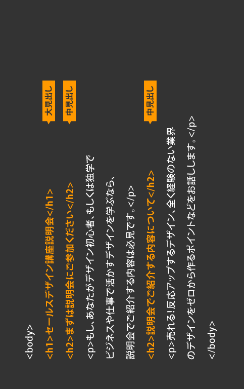

Gitとは、プログラムのソースコードなどの変更履歴を記録・追跡するための分散型バージョン管理システムである。
各ユーザーのワーキングディレクトリに全履歴を含んだリポジトリの完全な複製が作られるため、ネットワークに
アクセスできない環境でも履歴の調査や変更の履歴といったほとんどの作業を行うことができる。

Gitの特徴として
- 新旧ファイルの一括管理
- 複数人での編集履歴や修正箇所の共有
- 任意の時点のファイルに戻れる
- Excelや画像などのあらゆるファイルの管理が可能
そのためにプログラミング、Webデザイン、Web上の記事、事務所のなどで重宝されている。
参考文献【 絶対理解できる】Gitとは？特徴やできることまとめ!
HTMLとは、ハイパーテキスト・マークアップ・ランゲージ（Hyper Text Markup Language）の略称のことを指します。
Hの部分のハイパーテキストとは、コンピュータを利用した文書作成・閲覧システムの一つで、文書内の任意の位置や要素
他の文書への所在情報や識別情報を埋め込むことで複数の文書を相互に結びつける高性能なテキストである。
Mの部分のマークアップとは、文章の構成や文章の役割を示すという意味で
見出しや段落・表・リンクなど、文章が構成されている要素がどのような役割を持っているかを指示しています。
HTMLタグとは、文字（テキスト）に意味を与える印のようなものです。
文字をタグで囲うとただの文字がh1（見出し）やp（段落）といった意味を持つようになります。
＜＞開始タグと＜＞終了タグの間にある部分をコンテンツと言い、コンテンツを編集して文章の作成を行います。

上記のタグ以外にも様々なHTMLタグがあるので状況に合わせた適切なHTMLタグを使用することが大切です。
HTMLの特徴として